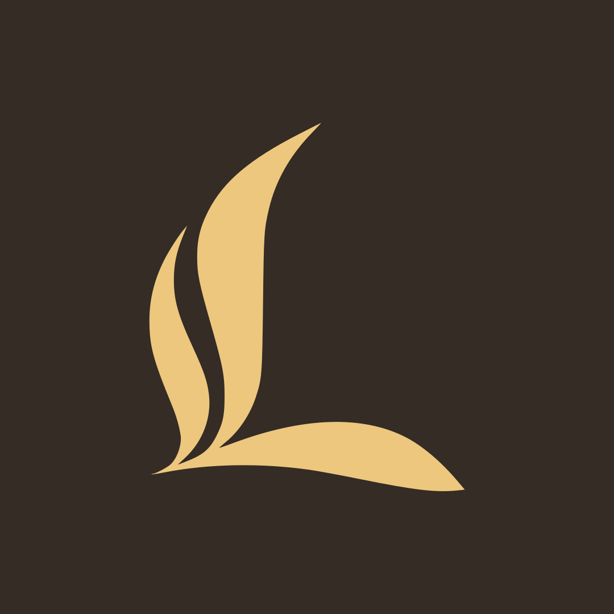
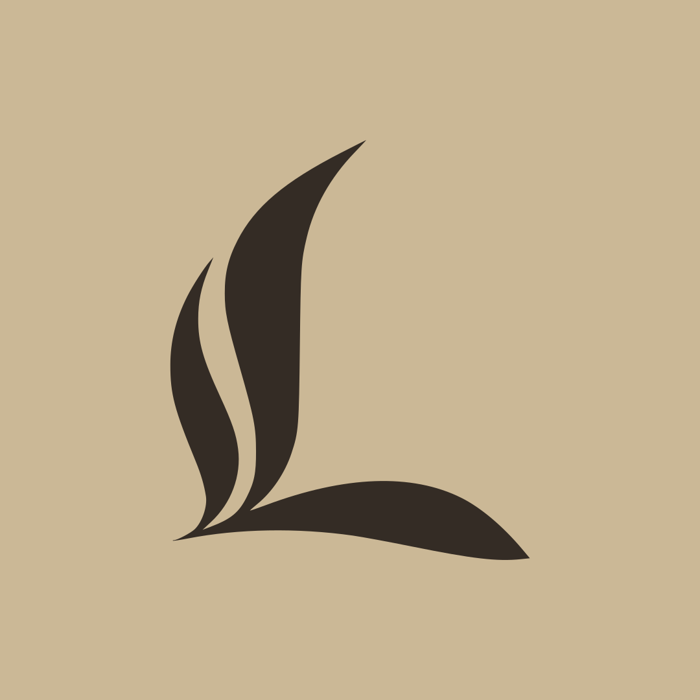
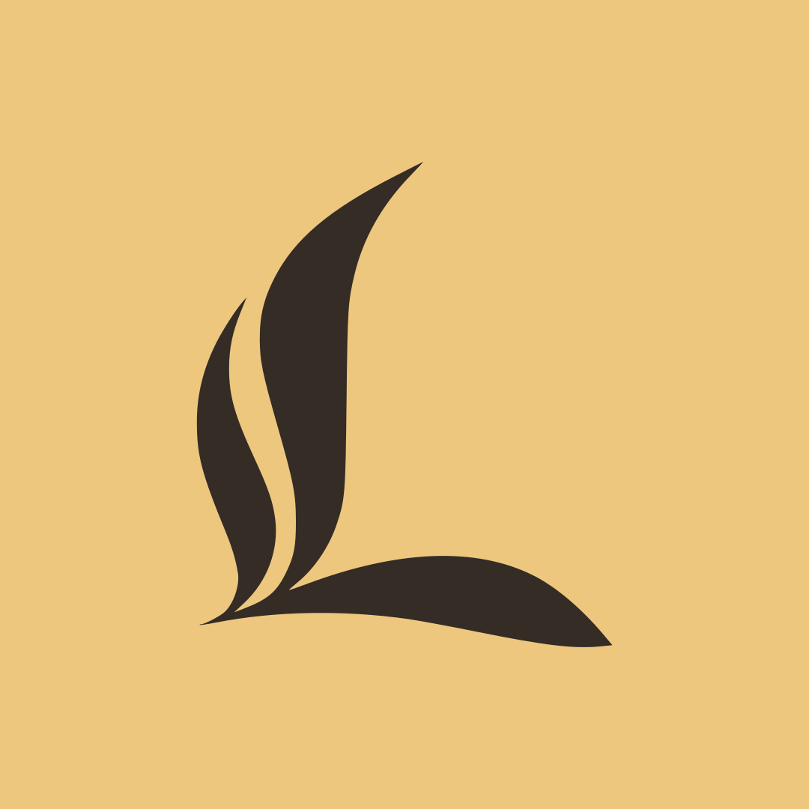
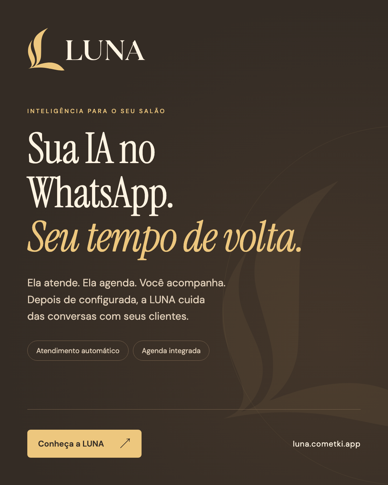
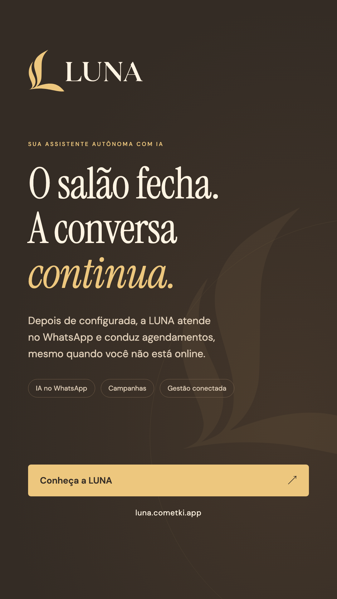
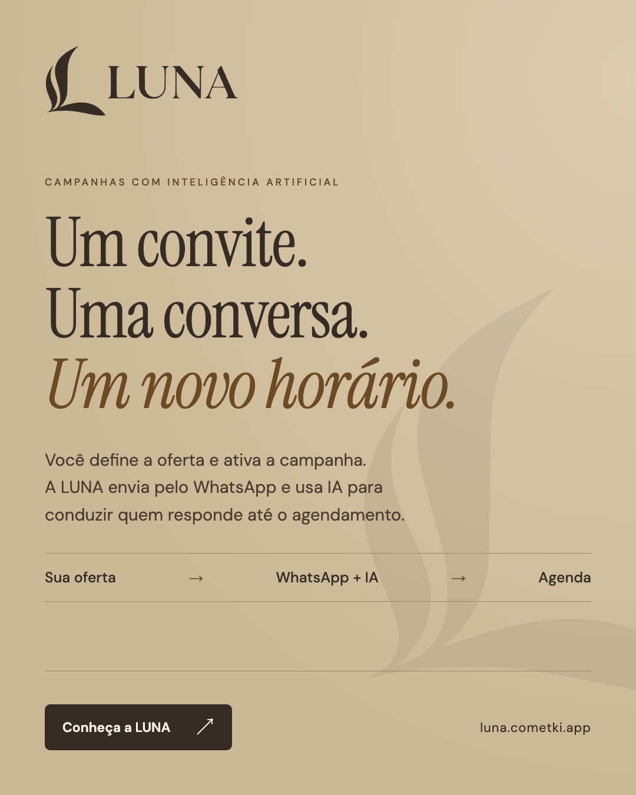

Café · #342c25Ouro · #edc77eMarfim · #fff4e3Areia · #cbb896

EssencialCafé + ouro

SuaveAreia + café

PresençaOuro + café
FEITA PARA CONVERSAR COM SEUS CLIENTES

Feed · IA e atendimento

Story · A conversa continua

Feed · Campanhas com IA
Logos horizontais e verticais · Ícones · Perfis · DivulgaçãoSVG editável + PNG em alta resolução